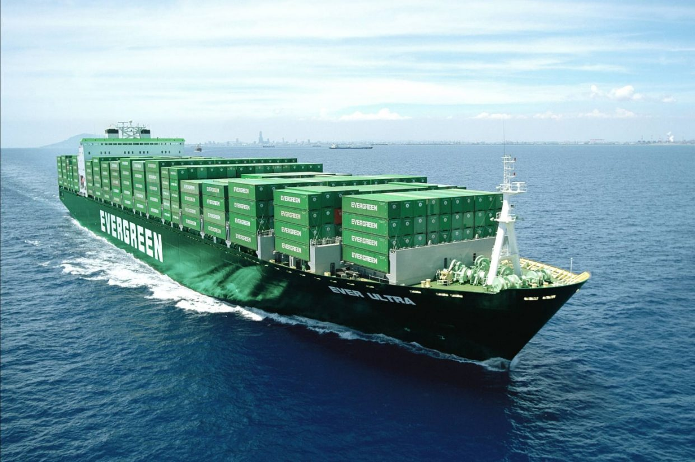

Ever Ace
Длина: 400 метров
Ever Ace в настоящее время является самым крупным контейнеровозом в мире. Корабль был построен Samsung Heavy Industries.
Его длина составляет 399,9 метра, а ширина — 61,5 метра. Габариты позволяют Ever Ace разместить 24 ряда стандартных 20-футовых контейнеров. Всего он вмещает 23 992 контейнера, что на сегодняшний день является рекордом.
Двигатель состоит из 11 цилиндров, которые в совокупности выдают 96 463 л.с. Он способен развивать крейсерскую скорость 22,6 узла или 41,8 км/ч.